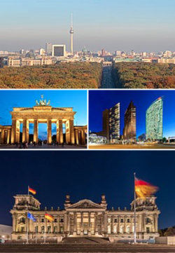

Berliini on Saksan pääkaupunki ja yksi Saksan osavaltioista. Noin 3,6 miljoonalla asukkaallaan se on myös Saksan suurin ja Euroopan unionin suurin kaupunki. Löyhemmin määritelty Berliinin metropolialue jatkuu kuitenkin kauas ympäristöön, ja sillä asuu alueen määritelmästä riippuen noin 4,6–6,2 miljoonaa ihmistä. 1200-luvun alussa perustettu Berliini kohosi vuonna 1701 Preussin ja vuonna 1871 yhdistyneen Saksan valtakunnan pääkaupungiksi. Toisen maailmansodan jälkeen kaupunki jaettiin miehityssektoreihin, joista Yhdysvaltain, Britannian ja Ranskan hallitsemista muodostui Länsi-Berliini ja Neuvostoliiton hallitsemasta Itä-Berliini.
